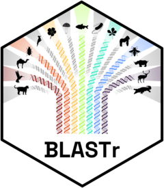

Run Parallelized BLAST and return every HSP
Source:R/parallel_blast_hsps.R
parallel_blast_hsps.RdLike parallel_blast(), but returns the raw BLAST hits in long format:
one row per HSP (high-scoring pair), with the BLAST fields chosen in
fields, instead of one row per sequence. Nothing is filtered or cut
beyond what is asked: by default there is no limit of HSPs per subject
(max_hsps) and no coverage filter (perc_qcov_hsp). Use it when the
alignments themselves are needed, e.g. to rebuild a hit from the two
ends of a concatenated sequence.
The search uses the same batches, automatic strategy, progress/ETA,
background jobs and log as parallel_blast(). Instead of a database,
subject searches against the sequences of a FASTA file (BLAST
-subject, no database needed); then each process uses one thread.
Usage
parallel_blast_hsps(
query_seqs,
db_path = NULL,
...,
subject = NULL,
total_cores = 1L,
ram_gb = NULL,
fields = hsp_fields_default,
task = NULL,
max_target_seqs = 50L,
max_hsps = NULL,
perc_id = NULL,
perc_qcov_hsp = NULL,
evalue = NULL,
extra_args = character(0L),
num_threads = NULL,
batch_size = NULL,
mt_mode = NULL,
background = FALSE,
job_dir = NULL,
log_dir = NULL,
retry_times = 3L,
blast_type = "blastn",
verbose = c("progress", "silent", "cmd", "output", "full"),
env_name = "blastr-blast-env"
)Arguments
- query_seqs
Character vector with sequences.
- db_path
Path(s) to the formatted BLAST database(s). Give either
db_pathorsubject.- ...
These dots are for future extensions and must be empty.
- subject
Path to a FASTA file to search against instead of a database (BLAST
-subject).- total_cores
Number of CPU cores (threads) to use in total.
- ram_gb
RAM available for the search, in GB. Used to decide whether the database fits in memory.
NULLuses the total RAM of the machine.- fields
BLAST tabular output fields (see
blastn -help,-outfmt). Numeric fields are returned as numbers.- task
BLAST task (
-task), e.g."megablast"(theblastndefault),"dc-megablast"or"blastn".NULLuses the BLAST default.- max_target_seqs
Number of subjects kept per sequence. Defaults to
50.- max_hsps
Number of HSPs kept per subject.
NULL(default): no limit.- perc_id, perc_qcov_hsp, evalue
Lowest identity and query coverage per HSP (percent) and highest e-value.
NULL(default): no filter (BLAST default forevalue).- extra_args
Further BLAST arguments, as a character vector, e.g.
c("-dust", "no").- num_threads, batch_size, mt_mode
Override the automatic strategy: threads per
blastnprocess, sequences per batch and BLAST+ multithreading mode (0,1or2).NULL(default) chooses automatically.- background
If
TRUE, start the search in the background and return a job (seeblast_job()) instead of the results.- job_dir
Directory for the job files. Defaults to a temporary directory (removed at the end) in the foreground, and to a new directory in the BLASTr cache in the background.
- log_dir
Directory where a
BLASTr_logsfolder keeps a log of the searches (number and lengths of the sequences, database size, strategy, time, CPU time and percentage of identifications).NULLuses the optionBLASTr.log_diror the environment variableBLASTR_LOG_DIR; with none set, nothing is logged. Seeblast_log_path().- retry_times
Number of times to retry failed BLAST jobs. Defaults to
3attempts.- blast_type
BLAST+ executable to be used on search.
- verbose
"progress"(default) shows the progress and ETA;"silent"shows nothing."cmd","output"and"full"also show the chosen strategy.- env_name
The name of the conda environment used to run command-line tools. Defaults to
"blastr-blast-env".
Value
A tibble with Sequence, hit (rank of the subject for that
sequence), hsp (rank of the HSP within the subject) and one column per
field. Sequences without hits do not appear. The attribute
BLASTr_metadata is as in parallel_blast(). With
background = TRUE, a blastr_job (see blast_job()).
Examples
if (FALSE) { # \dontrun{
hsps <- parallel_blast_hsps(
query_seqs = seqs,
db_path = "/data/databases/core_nt/core_nt",
total_cores = 30,
perc_id = 80
)
# against the sequences of a FASTA file, as BLAST -subject
parallel_blast_hsps(seqs, subject = "controls.fasta", task = "blastn",
extra_args = c("-dust", "no"))
} # }